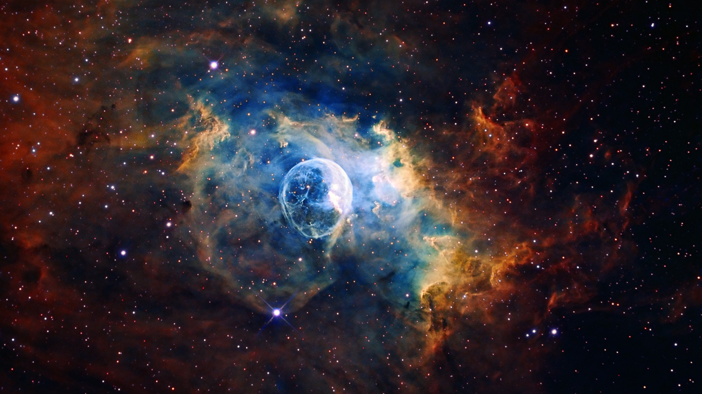

Witaj na stronie poświęconej lotom w kosmos
Od pierwszych lotów Gagarina po współczesne misje na Marsa. Przygoda człowieka z kosmosem trwa od dekad, a nowe technologie umożliwiają nam odkrywanie tajemnic wszechświata.
Kosmos fascynuje nas od zawsze. Dziś, dzięki współczesnej technologii, możemy badać przestrzeń kosmiczną jak nigdy wcześniej. Od astronautów do robotów, wszyscy jesteśmy częścią tej niezwykłej podróży.
| Historia lotów | Najważniejsze misje | Naukowcy i ich wkład |